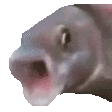

1. w maju 1995 roku
2.Nie musi zostać skompilowany do kodu maszynowego, aby można było zobaczyć efekty jego działania
3.Jest wykonywany u klienta
4.Ze względów bezpieczeństwa JavaScript ma znacznie ograniczone uprawnienia dostępu do zasobów komputera, przy użyciu którego przeglądana jest dana strona, a wszelkie odwołania do funkcji i obiektów wykonywane są w trakcie wykonywania programu
5.Jest to język obiektowy, ponieważ można robić zaawansowane strony internetowe i aplikacje
toolbar=no --> ukrywa pasek narzedzi
directories=no --> ukrywa przyciski katalogów
menubar=no --> ukrywa menu
height=280 --> wysokość 280
width=160 --> szerokość 160
top=200 --> góra 200
left=200 --> lewo 200
< input type="button" name="przycisk" value="Nowa Strona" onclick="WinOpen(' ')" > --> przycisk do otwierania nowej strony
window.open("obraz.html","okienko","toolbar=no,directories=no,menubar=no,height=280,width=160,top=200,left=200"); --> otwiera okno o wartości: wysokość=280, szerokość=160, góra=200, lewo=200
window.close() --> zamyka strone
